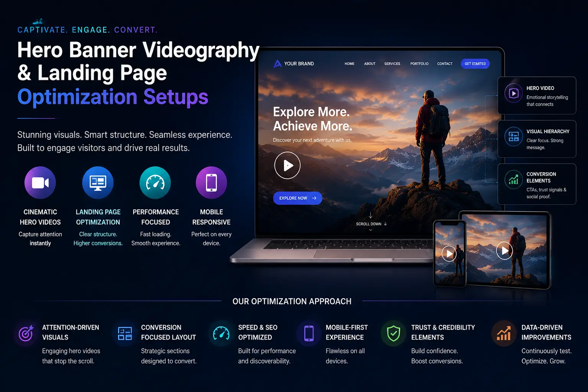
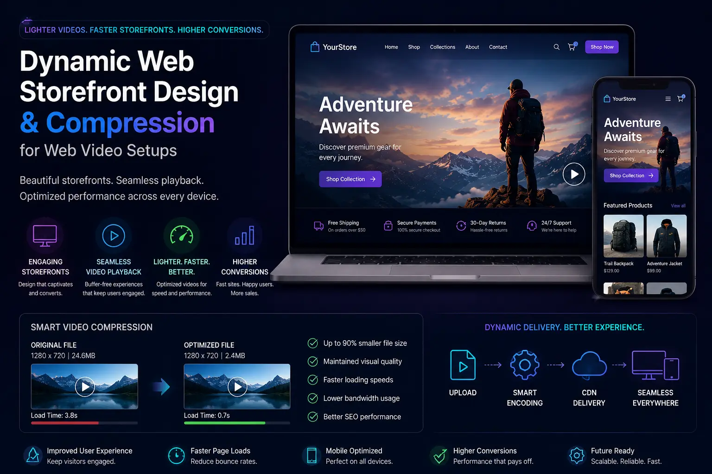

Optimizing Website Header Videography and Micro-Loops for Instant Session Duration Boosts
Winning the Hook: Motion in the First Fold
When a visitor lands on a website, they make an immediate, unconscious evaluation of the brand's quality, modern aesthetic, and professionalism. Static imagery has long been the default for website headers, but flat designs often struggle to capture attention in busy digital spaces. Today's brands must hook visitors instantly to keep them from clicking away.
This has led to the adoption of high-quality website video headers. By combining professional **Website Hero Banner Videography** with interactive layouts, companies can build **dynamic web storefront design** spaces that hold attention. Subtle background movements keep visitors on the page, driving dwell time.
Through custom **Landing Page Visual Optimization** and structured **Website & Catalog Visual Production** workflows, brands can implement video headers that engage audiences without slowing down performance.
Technical Production: Filming and Designing Web Micro-Loops
Creating background loops that support—rather than distract from—your website messaging requires specific production and styling choices.
- Designing clean moving website headers. When building **Moving website headers**, use slow, fluid camera movements. Avoid rapid pans, shaky footage, or sudden lighting changes. The motion should serve as a subtle background element that highlights your headline text.
- Creative looping background video production workflows. Seamless loops keep visual transitions natural. In professional **looping background video production**, editors use fade transitions at cut points to create endless loops, preventing jarring jumps that disrupt user focus.
- Optimizing the e-commerce landing page video. A high-converting **e-commerce landing page video** should showcase your products in action. Highlight material textures, demonstrate use cases, or display design details within the hero loop to build immediate trust.
- Applying high-contrast color overlays. To keep overlay text readable, apply a dark or semi-transparent color mask over the video layer. This ensures white headline text and CTA buttons stand out, maintaining accessibility across all screen sizes.
Boost Session Durations
Subtle video loops engage visitors, increasing average dwell time. Longer sessions improve brand trust and give users more time to explore your catalog.
Reduce Page Bounce Rates
An engaging hero video hooks users immediately. Delivering a premium visual experience the moment a page loads reduces bounce rates on key landing pages.
Improve SEO Rankings
Search engines reward sites with high user dwell times. Increasing session durations through optimized video headers indicates your content is valuable, boosting visibility.
Highlight Product Quality
Showing close-up product details and textures in the hero loop validates your craftsmanship, driving higher interest and conversions.

The Web Performance Balance: Compression and Formatting Rules
Heavy video assets can slow down page loads. Use these compression guidelines to deliver high-quality visuals while keeping your site fast.
- Target file size limits. Keep background loop files under 2MB—ideally under 1MB. Use WebM format with VP9 or AV1 compression, alongside standard MP4 (H.264) for fallback support. WebM offers high compression rates, maintaining clarity at low file sizes.
- Advanced compression for web video. Set the resolution of your hero loop to 1080p for desktops and scale it down to 720p for mobile devices. Using custom responsive breakpoints ensures mobile users receive lightweight files.
- Stripping audio tracks to save bandwidth. Background videos must always be muted. When compressing files, remove the audio track entirely from the video container. This strips unnecessary data, saving bandwidth and ensuring autoplay.
- Setting up conversion rate optimization visuals with static fallbacks. Always set a static placeholder image (optimized WebP) as a CSS fallback. While the video loads, users see a clean static frame, preventing empty layouts.
Code and Autoplay Optimization Checklist
Configure your HTML video tags correctly to ensure smooth playback and prevent layout shifts.
HTML5 Tag Settings
-
Always include the
autoplay,loop, andmutedattributes in your video tag. -
Add the
playsinlineattribute to ensure the video autoplays on mobile browsers without entering full-screen. -
Set
preload="metadata"orpreload="none"to prevent the browser from loading the entire file on page load.
Responsive Media Breakpoints
- Use liquid templates or custom JS to serve different video resolutions based on screen width.
- Deliver a lightweight, vertical loop to mobile screens and reserve high-res files for desktops.
- This saves user bandwidth and ensures fast mobile load times.
Hardware GPU Acceleration
-
Apply CSS properties like
will-change: transformortransform: translate3d(0,0,0)to your video container. - This forces browsers to use GPU rendering, preventing scroll lag and maintaining smooth animations.
- Avoid layering complex CSS filters on top of playing video layers.
Integrating Video into the Digital Customer Journey
Deploy video loops strategically across your storefront to guide users toward conversion.
- The interactive hero section. Use a looping hero video to establish your brand aesthetic. Pair this with a clear value proposition and a CTA button, using the visual energy of the video to drive initial action.
- Feature details with micro-loops. Place short, looping video cards next to key features further down the page, explaining how your product works.
- Video support at conversion points. Place subtle product loops next to checkout or contact forms, reinforcing quality and trust as users complete their actions.

Conclusion
Optimizing website header videography and micro-loops is an effective way to improve web metrics and session durations. By replacing static backgrounds with **Website & Catalog Visual Production** assets that feature optimized loops, brands can build engaging storefronts.
Through smart **compression for web video**, responsive video tags, and custom **Website Hero Banner Videography**, you can deliver motion assets that boost conversions without affecting page load speeds.
At The PhD Ads in Madurai, we produce beautiful **looping background video production** assets, design **dynamic web storefront design** layouts, and implement **Landing Page Visual Optimization** strategies to help brands build engaging online storefronts.
Key Topics
Upgrade Your Storefront with Dynamic Visuals
Ready to boost session durations with optimized website video headers? At The PhD Ads in Madurai, we produce beautiful micro-loops, set up compressed video headers, and optimize landing page layouts that convert.
Email: team@e2o.in